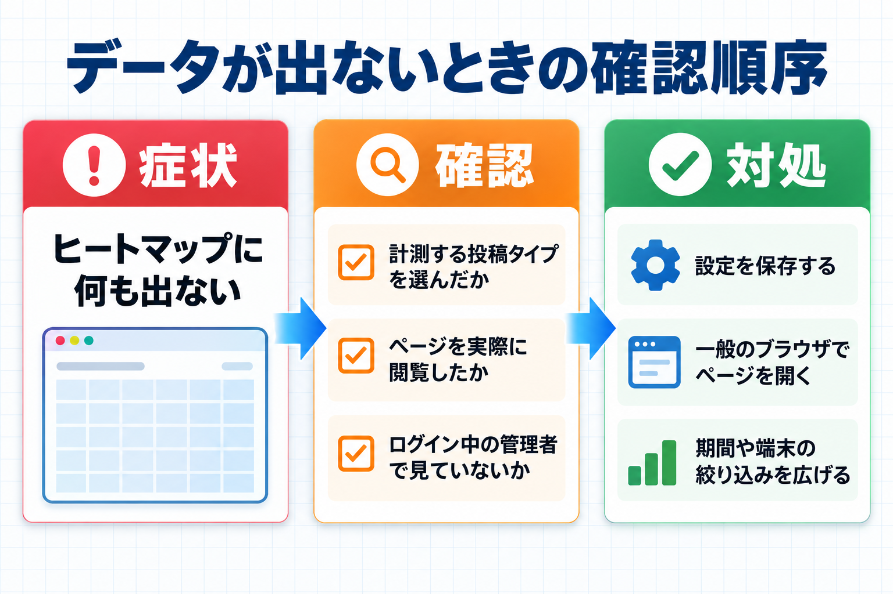

トラブルシューティング
「データが表示されない」「数が思ったより少ない」など、よくあるつまずきと、その確認方法をまとめます。
まず確認すること
数値が思うように出ないときは、次の 3 点を上から順に確認してください。ほとんどの場合はここで解決します。
- 計測する投稿タイプが選ばれているか: 設定画面の「計測する対象」で、見たいページの種類にチェックが入っているか確認します。
- 対象ページを実際に閲覧したか: 計測はページが閲覧されたときに始まります。まだ誰も見ていなければデータはありません。
- 除外されるユーザーで見ていないか: ログイン中のユーザーは計測から外れる設定になっています。確認するときは、ログインしていない一般のブラウザでページを開いてみてください。

よくある症状と対処
ヒートマップにデータが出ない
症状: ヒートマップ画面やダッシュボードに「まだデータがありません。」と表示される。
確認すること:
- 設定画面の「計測する対象」で、対象の投稿タイプにチェックが入っているか。
- 対象のページを実際に閲覧したか。
- 閲覧したのが、除外されるユーザー（ログイン中の管理者など）ではないか。
対処: 設定にチェックを入れて保存し、ログインしていないブラウザで対象ページを開いて、いくつかクリックやスクロールをしてみてください。数秒後にデータが表示されます。
ダッシュボードに警告が出る
症状: 「計測対象の投稿タイプがまだ選ばれていません。…」という警告が表示される。
原因: 計測する投稿タイプが 1 つも選ばれていません。
対処: 警告の中の「設定を開く」を押し、「計測する対象」で投稿タイプにチェックを入れて保存します。
症状（そのほかの警告）: 「データベースの更新が終わっていません。計測データの表を変更できない状態です…」という警告が表示される。
原因: 計測データの表を変更する権限が、データベースのユーザーに無いなどの理由で、表の更新が終わっていません。この間、読み込みの途中に離れたページなどの到達率は、訪問者のブラウザで送り直しを待ち、7 日を過ぎた分は記録されません。
対処: サーバーの管理者に、データベースのユーザーの権限を確かめてもらってください。権限が直ると、次のアクセスで自動で更新されます。
症状（届いていない操作）: 「直近 8 日に、訪問者のブラウザからまだ届いていない操作が N 件あります…」というお知らせが表示される。
原因: ブラウザの保存領域が使えない・一杯の状態で、受け取りを確かめられないままページを離れた訪問者の分です。これらの操作は、画面の数字には入っていません。
対処: 対処は要りません。その訪問者が後でこのサイトを開くと届き、件数は減ります。
クリックしたのに数が増えない
症状: 自分でクリックしてもクリック数が増えない。
確認すること: ログイン中のユーザーは計測から除外されます。また、除外する権限グループに自分の役割が入っていないか、除外する IP アドレスや URL パターンに当てはまっていないか、ブラウザの「追跡しない（Do Not Track）」が有効になっていないか（設定の「ブラウザの「追跡しない」設定を尊重する」がオンのとき、計測されません）を確認してください。
対処: ログインしていないブラウザで試すと計測されます。自分のアクセスも計測したい特別な場合は、設定の「ログイン中のユーザーを計測から除外する」と「除外する権限グループ」を見直してください。
マウスムーブのデータが無い
症状: ヒートマップ画面の「表示するデータ」で「マウスムーブ」を選んでも何も表示されない。
原因: 「マウスムーブ」の記録がはじめはオフになっています。
対処: 設定画面の「計測する対象」→「計測する項目」で「マウスムーブ」にチェックを入れて保存します。データ量が増えるため、必要なときだけオンにしてください。
スクロール到達率が思ったより低い
症状: ページの下のほうまで見られているのに、到達率が低く出る。
確認すること: 端末の絞り込みが「すべて」になっていないか確認してください。スマートフォンでは画面が小さいため、パソコンより早く下まで到達します。
対処: ツールバーの「端末」を切り替えて、パソコンとスマートフォンを別々に見ると、実態がつかみやすくなります。
配色や半径を変えても見た目が変わらない
症状: ツールバーで「半径」「濃さ」「配色」を変えてもプレビューが変わらない。
原因: 条件を変えたあと、更新していない可能性があります。
対処: 条件を変えたら「表示を更新」ボタンを押してください。
動作要件
ご利用の環境が次の条件を満たしているか確認してください。満たしていないと、正しく動作しないことがあります。
| 項目 | 要件 |
|---|---|
| WordPress | 6.0 以上 |
| PHP | 7.4 以上 |
| 対応ブラウザ | Chrome / Firefox / Safari / Edge の各最新版 |
| 管理画面の権限 | 管理者（設定の変更とヒートマップの閲覧に必要） |
| 必要な機能 | WordPress の標準機能のみ。外部サービスへの接続は不要です |
データの量と保存について
- 個々の操作を記録した詳しいデータ（生データ）は、既定で 180 日を過ぎると自動で削除されます。集計された数値は残ります。
- アクセスが非常に多いサイトでは、設定の「サンプリング（%）」を下げるとデータ量を抑えられます。
- 保存されているデータをすべて消したいときは、設定画面の「計測データの削除」から削除できます。この操作は元に戻せません。
それでも解決しないとき
上を確認しても解決しない場合は、次の情報を添えてお問い合わせください。（1）症状が出る画面、（2）行った操作の手順、（3）ご利用の WordPress と PHP のバージョン、（4）ご利用のブラウザ。ログイン情報やパスワードは送らないでください。